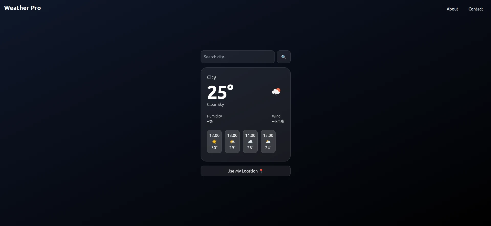
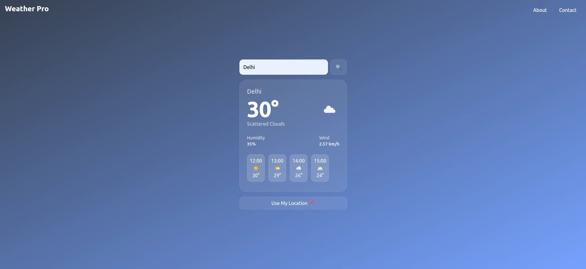
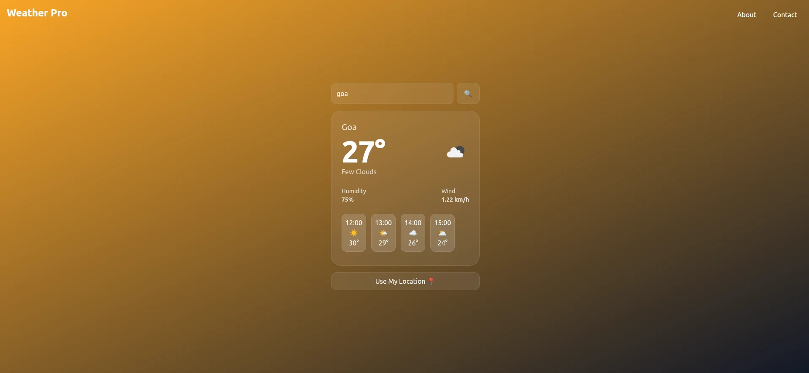

A real-time weather application focused on clean UI, clarity, and smooth user experience.

The goal was to build a simple and intuitive weather interface that provides real-time data with clear visuals and easy interaction.

